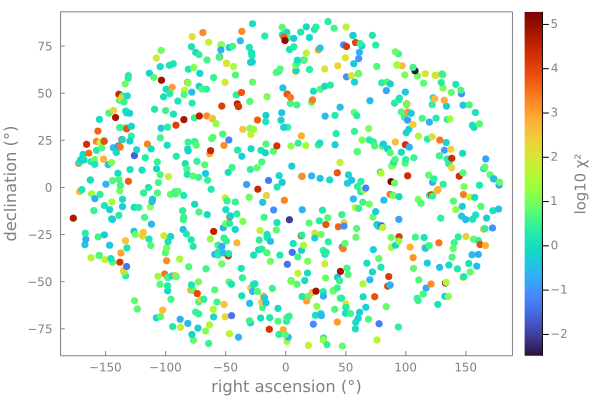

Working with tabular data
Tables are a common way to represent various forms of catalogs. One common format for storing this data in astronomy is as a FITS file.
In these examples, we will fetch and load the Hipparcos-GAIA Catalog of Accelerations [(HGCA, Brandt et al 2021])](https://iopscience.iop.org/article/10.3847/1538-4365/abf93c). This catalog cross matches stars from the Hipparcos and GAIA catalogs in order to calculate the long term astrometric proper motion anomaly; that is, the star's deviation from straight line motion in the plane of the sky over the ~20 baseline between the two missions.
A wide range of tabular data formats are supported in Julia under a common Tables.jl interface. For example, CSV, Excel, Arrow, CASA Tables, and various SQL formats to name a few.
Packages
FITSIO: we'll use this package to load a table stored in a FITS fileDataFrames: we'll use this package to examine and manipulate the tablePlots: we'll use this package to visualize the contents of the tableAstroLib: general utility package. We'll use a helper function to compute a map projection.
You can install the necessary packages by running Julia, and typing ] to enter Pkg-mode. Then: add FITSIO DataFrames Plots AstroLib. Alternatively, you can run using Pkg; Pkg.add(["FITSIO", "DataFrames", "Plots", "AstroLib"]).
If you will be using these tools as part of a larger project, it's strongly recommended to create a Julia Project to record package versions. If you're just experimenting, you can create a temporary project by running ] activate --temp.
If you're using Pluto notebooks, installing and recording package versions in a project are handled for you automatically.
Downloading the data
The table in question is hosted alongside the article. Go to Table 4 and click the link at the bottom to download it in FITS format. You'll need to uncompress the archive to see the HGCA_vEDR3.fits file.
FITS tables can be loaded using the FITSIO package or the AstroImages package which wraps it.
Loading the table
julia> using FITSIO
julia> fits = FITS("HGCA_vEDR3.fits")
File: HGCA_vEDR3.fits
Mode: "r" (read-only)
HDUs: Num Name Type
1 Image
2 Table
julia> table_fits = fits[2]
File: HGCA_vEDR3.fits
HDU: 2
Type: Table
Rows: 115346
Columns: Name Size Type TFORM
hip_id Int32 J
gaia_source_id Int64 K
gaia_ra Float64 D
gaia_dec Float64 D
radial_velocity Float32 E
...
chisq Float32 EIf we choose to use the AstroImages package, this code could be substituted for:
julia> using AstroImages
julia> table_fits = load("HGCA_vEDR3.fits", 2);Since this table conforms to the Tables.jl interface we can already pass it to a wide range of analysis and plotting tools; however, for interactive work it's useful to wrap this data in a DataFrame from DataFrames.jl.
julia> using DataFrames
julia> df = DataFrame(table_fits)
115346×35 DataFrame
Row │ hip_id gaia_source_id gaia_ra gaia_dec ⋯
│ Int32 Int64 Float64 Float64 ⋯
────────┼───────────────────────────────────────────────────────
1 │ 1 2738327528519591936 0.000871957 1.0889 ⋯
2 │ 2 2341871673090078592 0.00511158 -19.4988
3 │ 3 2881742980523997824 0.00506023 38.8593
4 │ 4 4973386040722654336 0.00907157 -51.8935
5 │ 5 2305974989264598272 0.00997423 -40.5912 ⋯
⋮ │ ⋮ ⋮ ⋮ ⋮ ⋱
115343 │ 120401 5290738562888564736 119.382 -60.6309
115344 │ 120402 5290832364972775808 119.449 -60.6097
115345 │ 120403 5290725643625189504 119.455 -60.6836
115346 │ 120404 5290820682661822848 119.512 -60.6147 ⋯
32 columns and 115337 rows omitted
Examining the table
As a first step, let's summarize the contents of the data frame using describe:
julia> describe(df)
35×7 DataFrame
Row │ variable mean min median max nmissing eltype
│ Symbol Union… Any Union… Any Int64 DataType
─────┼──────────────────────────────────────────────────────────────────────────────────────────────────────────
1 │ hip_id 59162.8 1 59133.5 120404 0 Int32
2 │ gaia_source_id 3.5587e18 7632157690368 3.58418e18 6917489002841762304 0 Int64
3 │ gaia_ra 181.445 0.000871957 181.843 359.982 0 Float64
4 │ gaia_dec -2.13495 -89.7824 -1.96568 89.5695 0 Float64
5 │ radial_velocity NaN NaN NaN 0 Float32
6 │ radial_velocity_error NaN NaN NaN 0 Float32
7 │ radial_velocity_source Gaia_DR2 None 0 String
8 │ parallax_gaia 6.98091 0.1 4.29612 768.067 0 Float32
9 │ parallax_gaia_error 0.0450278 0.00802848 0.023354 1.52339 0 Float32
10 │ pmra_gaia -1.43563 -4406.47 -1.73408 6766.0 0 Float32
11 │ pmdec_gaia -16.3946 -5817.8 -5.53577 10362.4 0 Float32
12 │ pmra_gaia_error 0.062217 0.00743185 0.0326008 2.03418 0 Float32
13 │ pmdec_gaia_error 0.0574897 0.00869586 0.029098 1.99573 0 Float32
14 │ pmra_pmdec_gaia -0.0142746 -0.971819 -0.0116653 0.891564 0 Float32
15 │ pmra_hg -1.43057 -4406.68 -1.69382 6765.91 0 Float32
⋮ │ ⋮ ⋮ ⋮ ⋮ ⋮ ⋮ ⋮
22 │ pmra_hip_error 1.22346 0.290212 0.93546 2269.23 0 Float32
23 │ pmdec_hip_error 1.00177 0.289527 0.794942 113.61 0 Float32
24 │ pmra_pmdec_hip 0.00441718 -0.94068 0.000400515 0.986897 0 Float32
25 │ epoch_ra_gaia 2016.07 2015.11 2016.07 2017.05 0 Float64
26 │ epoch_dec_gaia 2016.09 2014.95 2016.1 2017.2 0 Float64
27 │ epoch_ra_hip 1991.25 1990.4 1991.25 1992.43 0 Float64
28 │ epoch_dec_hip 1991.28 1990.34 1991.28 1992.41 0 Float64
29 │ crosscal_pmra_hip -0.0578266 -1.36874 -0.0648208 1.50959 0 Float32
30 │ crosscal_pmdec_hip 0.00226569 -1.15742 0.00306844 1.59232 0 Float32
31 │ crosscal_pmra_hg -0.0013262 -0.0511373 -0.00269026 0.0619938 0 Float32
32 │ crosscal_pmdec_hg 0.000217839 -0.0598967 0.00025581 0.0564424 0 Float32
33 │ nonlinear_dpmra -9.0424e-5 -7.98001 3.44128e-8 2.64822 0 Float32
34 │ nonlinear_dpmdec 0.000311498 -4.1194 1.92019e-7 16.0394 0 Float32
35 │ chisq 566.555 3.11559e-5 3.35103 3.67633e5 0 Float32
6 rows omitted
This lists all the columns of the table along with their min, max, median, and means. It also specifies how many entries are missing and the element type of the column.
We can access a specific column from the table using two different syntaxes: df[:,"epoch_ra_gaia"], or simply df.epoch_ra_gaia.
Filtering
Let's apply a cut to the parallax column to only include nearby stars:
julia> nearby = filter(:parallax_gaia => >(50.0), df)
799×35 DataFrame
Row │ hip_id gaia_source_id gaia_ra gaia_dec radial_velocity radial_vel ⋯
│ Int32 Int64 Float64 Float64 Float32 Float32 ⋯
─────┼─────────────────────────────────────────────────────────────────────────────────
1 │ 428 386655019234959872 1.30108 45.7859 -1.24273 ⋯
2 │ 436 4706630501049679744 1.32232 -67.8351 40.2364
3 │ 439 2306965202564744064 1.38379 -37.3675 25.2944
4 │ 473 386653851004022144 1.42676 45.8114 1.15092
⋮ │ ⋮ ⋮ ⋮ ⋮ ⋮ ⋱
796 │ 117779 2867175035571212416 358.285 29.0182 1.30031 ⋯
797 │ 117828 6377828354964753792 358.463 -75.6342 -9.62612
798 │ 117966 2442996678074668288 358.914 -6.14423 17.0672
799 │ 120005 1022456104850892928 138.591 52.6834 11.9794
30 columns and 791 rows omittedLet's break this down. First, we specify the column name as :parallax_gaia. The : syntax defines a Symbol in Julia which is a bit like a string and a variable name. Next, we say what filter we want to apply to this column by passing a key-value Pair constructed with =>. This syntax, e.g. 1 => 2 just groups two values and is unrelated to keyword arguments. Then, we pass a predicate function, that is a function that takes one value and returns true or false. The expression >(50.0) produces such a function that takes a value and compares it with 50.0 milliarseconds of parallax. Finally, we pass the table we want to filter.
This useful cheatsheet by Tom Kwong is a great reference for these sort of operations.
Plotting
Let's now visualize these stars as they appear in the plane of the sky. We'll colour them based on the significance of the anomalous acceleration they had between the two satellite missions. This acceleration could be caused by a hidden companion star or planet.
julia> using Plots
julia> scatter(
nearby.gaia_ra,
nearby.gaia_dec;
marker_z = log10.(nearby.chisq),
colorbartitle="log10 χ²", # typed as \chi <tab> \^2 <tab>
label = "",
xlabel = "right ascension (°)", # typed as \degree <tab>
ylabel = "declination (°)"
)Let's improve this plot by using a different map projection. We can make this conversion using AstroLib.jl.
The function aitoff takes longitude and latitude (or in this case, right-ascension and delcination) and returns a new position using an Aitoff projection.
julia> using AstroLib
julia> newpoints = aitoff.(nearby.gaia_ra, nearby.gaia_dec)newpoints is returned as a vector of Tuples of x and y coordinates, but to plot them we'll need separate flat vectors of x and y values. We can convert using getindex:
julia> newx = getindex.(newpoints, 1)
julia> newy = getindex.(newpoints, 2)
799-element Vector{Float64}:
49.51360693576993
-71.02232113037604
-40.77386766281466
⋮
-78.04105630927837
-6.821326623255115
64.9538084311332getindex(obj, n) is equivalent to writing obj[n]. Here we use broadcasting to fetch the first and then second element of each point in the list.
Finally, we'll make the plot and tweak some formatting options:
julia> scatter(
newx,
newy;
marker_z = log10.(nearby.chisq),
color = :turbo,
colorbartitle="log10 χ²", # typed as \chi <tab> \^2 <tab>
label = "",
xlabel = "right ascension (°)", # typed as \degree <tab>
ylabel = "declination (°)",
background=:transparent,
foreground=:gray,
framestyle=:box,
markerstrokewidth=0,
grid=:none
)
We can save the plot using savefig("myplot.pdf"). png, svg, and other formats are also supported.
For more on plotting in general, see the Plots.jl documentation.